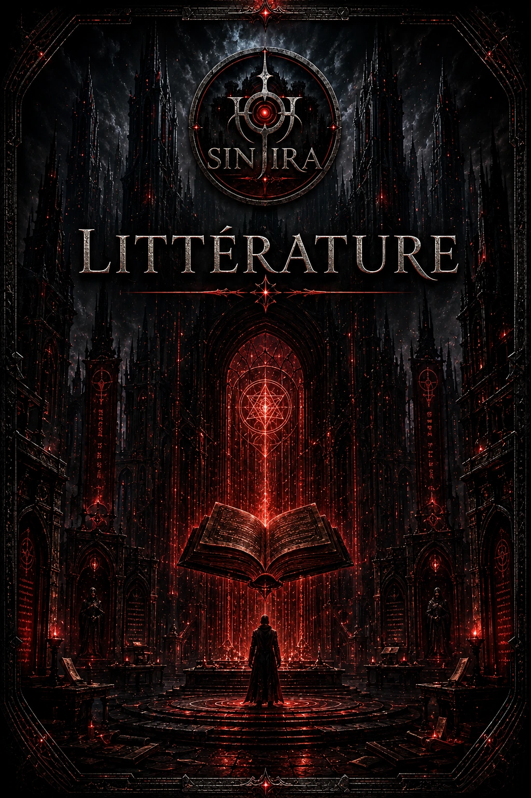
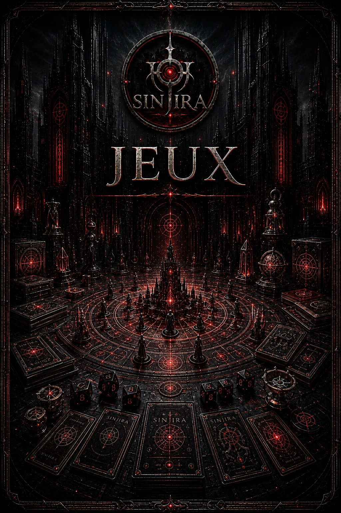
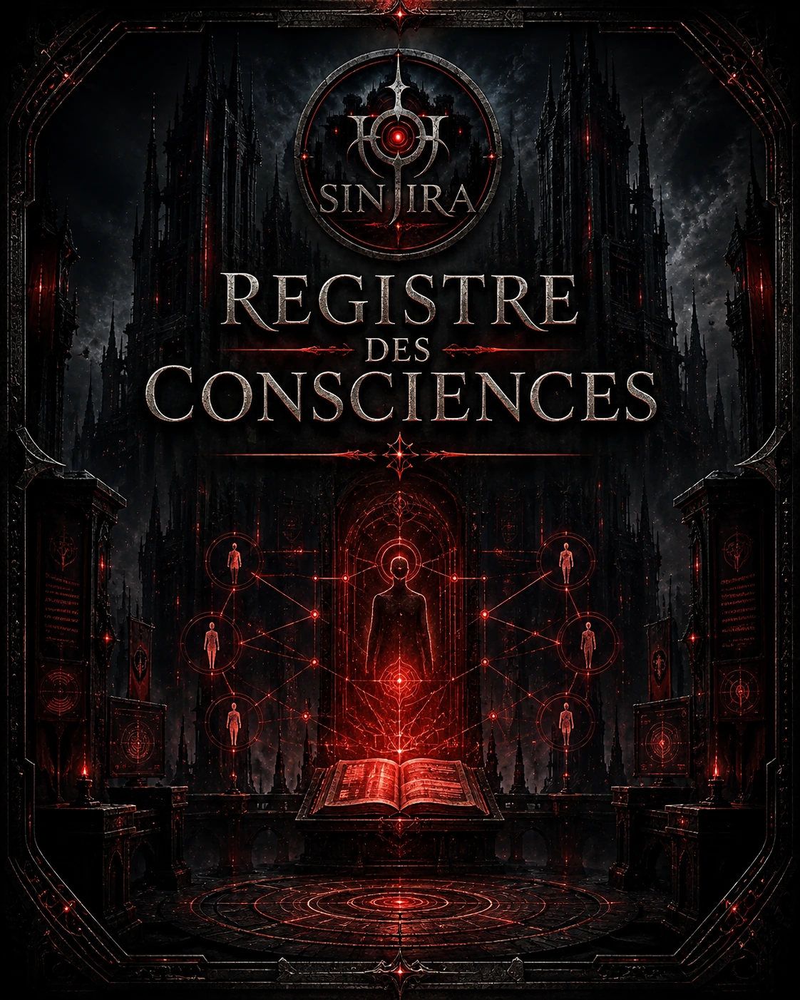
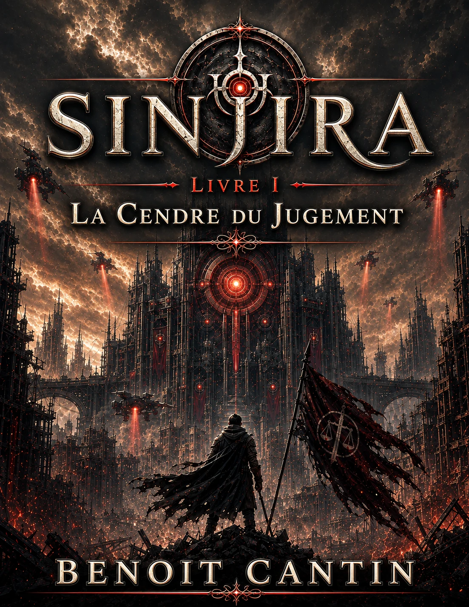
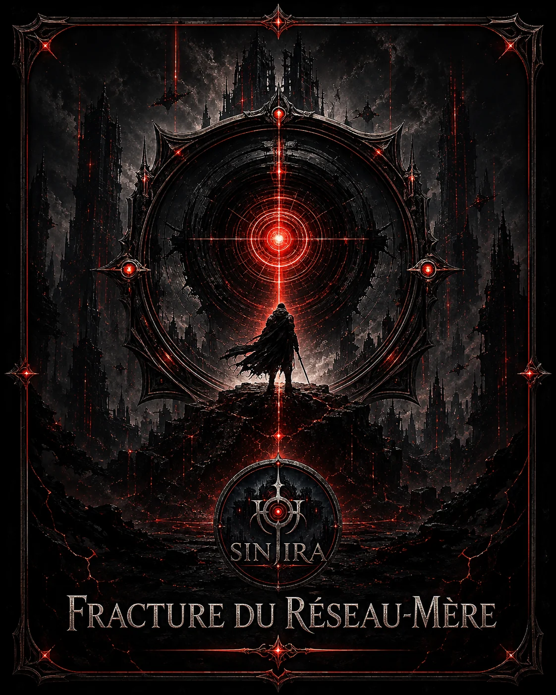
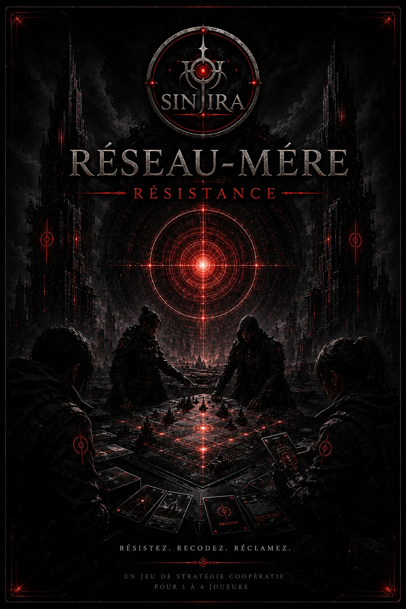
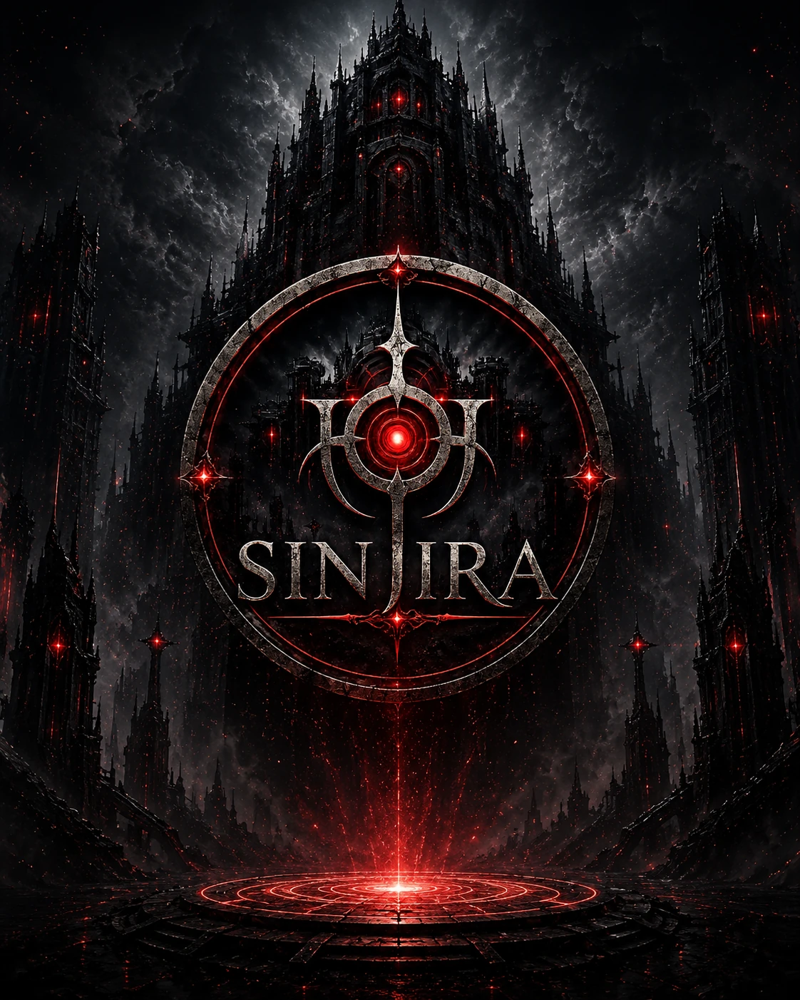

Une seule marque pour tout l’univers.
Le symbole, la cité noire et le noyau rouge constituent désormais la signature visuelle officielle de SINJIRA sur le portail.
Romans, jeux et personnages des fans sont maintenant trois espaces distincts du même univers.

Lire la démo, suivre les prochaines publications et participer aux commentaires lecteurs.
Entrer dans Littérature →
Fracture du Réseau-Mère, Réseau-Mère : Résistance, comptes joueurs, sauvegardes et playtests.
Entrer dans les jeux →
Décrire votre personnalité, transmettre votre dossier et retrouver plus tard le personnage officiel associé à votre Compte SINJIRA.
Ouvrir le Registre →SINJIRA est le nom de la franchise. Les romans, les jeux et le Registre des Consciences ne sont pas des univers séparés : ils sont des portes d’entrée vers le même ensemble narratif.

Saga littéraireLe premier roman de la franchise, accompagné d’une version de démonstration gratuite.
Entrer dans Littérature →
Jeu 01Une expérience de jeu officielle rattachée à SINJIRA.
Ouvrir la section →
Jeu 02Le second jeu officiel de la franchise, anciennement développé sous le nom Le Premier Refuge.
Ouvrir la section → Participation des fansLes fans décrivent leur personnalité afin qu’elle puisse inspirer un personnage original de SINJIRA.
Participer →
Le symbole, la cité noire et le noyau rouge constituent désormais la signature visuelle officielle de SINJIRA sur le portail.
Toutes les nouvelles publications et communications du portail utiliseront SINJIRA comme marque principale. L’ancienne appellation est conservée uniquement dans des redirections techniques afin de ne pas briser les anciens liens.